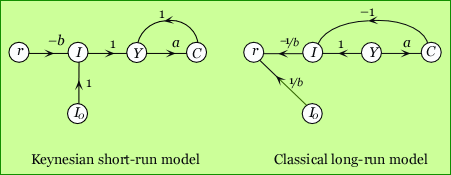

It is important to realize that a static model is not completely defined by its equations because its causal structure is still ambiguous without further assumptions about the roles of the variables, i.e. which are exogenous and which endogenous? Suppose we have a linear model with M equations and N variables, N > M. Then N-M of these variables must be exogenous while M are determined by the system and therefore endogenous. The key to a causal understanding of such a model is in the assignment of exogeneity. Many such assignments are possible, at least algebraically (though some may not make much sense), i.e. the number of ways that N-M variables can be chosen from N variables.
To keep it simple, consider just these three equations:
I = I0 - b.r
C = a.Y
Y = C + I
This way of writing the model suggests (but does not imply) that the left hand side variables are endogenous, leaving I0 and r exogenous. This interpretation corresponds to the Keynesian (short run) simple multiplier model. But it is just as valid to assign I0 and Y as exogenous, which corresponds to the classical (long run) "loanable funds" interpretation of the same equations. The two models differ not in their equations but in their causal structures.
 These graphs could be written down directly from the equations. But they can also be derived from each other by a graphical reversal of causality which involves: (i) selecting the exo/endogenous variables which will change roles; (ii) reversing a path between them, and inverting the individual path transmittances and (iii) moving the end-points of all paths that converge on the now-reversed path and changing their signs. It's easily accomplished on paper but the computer implementation enables it too.
Note that, inter alia, an increase in autonomous investment I0 increases consumption in the Keynesian model but does not affect the rate of interest whereas in the classical model it increases the rate of interest but has no effect on consumption.